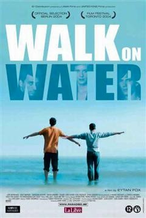

#11773 Übers Wasser wandeln
Alternativ: Walk On Water
 
 IMDB-Wertung: 7.3 / 10
IMDB-Wertung: 7.3 / 10  Metascore: 65
Metascore: 65 
Eyal, an Israeli Mossad agent, is given the mission to track down and kill the very old Alfred Himmelman, an ex-Nazi officer, who might still be alive. Pretending to be a tourist guide, he befriends his grandson Axel, in Israel to visit his sister Pia. The two men set out on a tour of the country during which, Axel challenges Eyal's values.
Jahr: 2004
Dauer: 98 Minuten
FSK:
Land: Israel Studio: ArsenalTonspuren:
Untertitel:
Auflösung: SD (576x320) Größe: 695 MB
Genre: Thriller, Drama, Mystery
Regisseur: Eytan Fox
Drehbuch: Knut Berger, Caroline Peters, Andreas Struck, Gal Uchovsky
Soundtrack: Ivri Lider
Darsteller:
 Lior Ashkenazi als Eyal
Lior Ashkenazi als Eyal- Gideon Shemer als Menachem
 Hanns Zischler als Axel's Father
Hanns Zischler als Axel's Father- Eyal Rozales als Jello
- Yousef 'Joe' Sweid als Rafik
- Imad Jabarin als Rafik's uncle
- Sivan Sasson als Weapons Instructor
- Natali Shilman als Iris
- Yuval Semo als Guy with a Cell Phone
- Nesrin Cavadzade als Abu Ibraim's Wife
- George Hubertus Regout als Drag Queen #1
- Knut Berger als Axel Himmelman
- Caroline Peters als Pia Himmelman
- Carola Regnier als Axel's Mother
- Ernest Lenart als Alfred Himmelman
- Hugo Yarden als Kibbuz Director
- Joshua Simon als Kibbuz Singer
- Tom Rahav als Kibbuz Singer
- Imke Barnstedt als Helga
- Adi Eisenman als Mossad Agent
- Mahir Tuocu als Abu Ibraim
- Ahmed Saydam als Ibraim
- Shay Rokach als Tel Aviv Bartender
- Sascha Remkuf als Berlin Bartender
- Biggy van Blond als Drag Queen
- Paisley Dalton als Drag Queen #3
- Itimar Ziv als Eyal and Pia's Baby
Datei: X:\NEU\Übers Wasser wandeln (2004, FSK, 576x320).avi seit 20.09.2019
 Es gibt insgesamt 187 Filme in der Gruppe 'NEU'
Es gibt insgesamt 187 Filme in der Gruppe 'NEU'